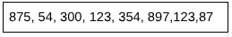
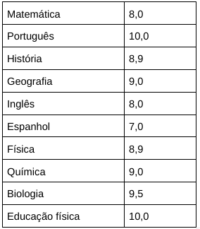
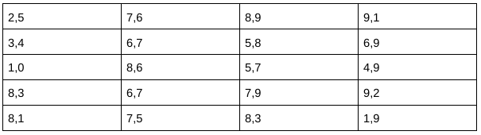
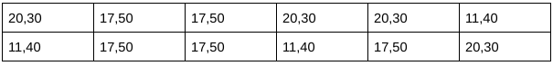
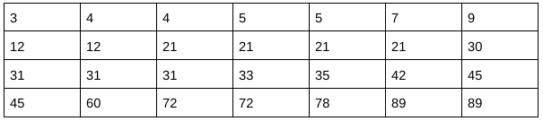

SOBRE O QUIZ
Esse quiz foi desenvolvido para testar seu conhecimento sobre Moda, Média e Mediana e, principalmente, te preparar para provas.
Pergunta 3: A média ponderada de todos os candidatos em uma prova foi 9,0, dos selecionados foi 9,8 e dos desclassificados foi 7,8. Qual o percentual de candidatos selecionados?
a) 20%b) 25%
c) 30%
d) 50%
e) 60%
Pergunta 4: Quais valores são, respectivamente, a moda, média e mediana dos números da lista a seguir:
Os valores respectivos são:
a) 120, 23, 55, 43b) 123, 351.6, 211.5
c) 327,81.75,897
d) 327,81.75,897
e) 322,85.20, 42
Pergunta 5: Em um almoço em família, os primos apresentam as seguintes idades: 11, 15, 17 e 21 anos. Se chegar mais um primo para o almoço com a idade de 9 anos, o que acontecerá com a média da idade dos primos?
a) 14.7b) 12.8
c) 14.6
d) 18.8
e) 13.6
Pergunta 6: No segundo trimestre, Maria alcançou as seguintes médias:
O resultado da média final de Maria é:
a) 8,83b) 8,25
c) 9,10
Pergunta 7: Uma professora de biologia costuma verificar a aprendizagem de seus alunos através da média das notas obtidas pela turma. Considere que a turma de 2025 obteve as seguintes notas no 1º trimestre.
Qual é a média das notas? Considerando que a média escolar é 7,0, a média está acima ou abaixo da média?
a) 7,55 e está abaixo da médiab) 7,20 e está acima da média
c) 7,9 e está acima da média
d) 7,9 e está abaixo da média
Pergunta 8: Uma cafeteria famosa vende suas bebidas em três tamanhos diferentes. Após um dia de vendas, a gerente fez um levantamento para saber qual das embalagens foi mais vendida. Em ordem de vendas, esses foram os valores anotados pelo caixa:
Com base na moda dos valores, determine que tamanho foi o mais vendido?
a) 20,30b) 17,50
c) 11,40
Pergunta 9: Analise a tabela a seguir:
Marque a alternativa que apresenta a moda dos dados da tabela acima.
a) 9b) 21
c) 30
d) 30,5
e) 31
Pergunta 10: Uma loja de roupas está analisando a preferência de cores de blusas entre suas clientes. Os dados coletados mostram que, em uma amostra de doze clientes, as preferências foram as seguintes: vermelho, azul, verde, azul, amarelo, preto, azul, verde, vermelho, azul, preto e azul. Qual é a moda das preferências de cor das clientes para as blusas?
a) vermelhob) azul
c) verde
d) amarelo
e) preto